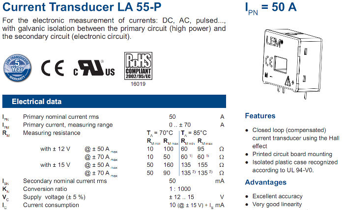

Capacitor
I built my circuit without a capacitor. The signal when measure using an oscilloscope looks something like this (example):
http://4.bp.blogspot.com/-aas6Wj1Gl10/TrVLxlRapHI/AAAAAAAABkw/FqkPUNr-r-...
{kind=link}
I read up on the section about DC bias and it appears that I should have included the capacitor. This will apparently give me an AC signal. Correct?
Will this increase the accuracy for both resistive and reactive loads?
Voltage divider.
I do not need to step down power so I did not include a voltage divider. On another point, resistors, while stepping down voltage, (when using a voltage divider,) do not save power since the power is dissipated through heat. A better alternative, although more costly is to use a buck dc-dc converter. But the cost may be a prohibitive to some.
Regards
Re: Voltage divider and Capacitor in the Current sensor circuit...
If your waveform at the ADC input looks like the one in the link, something is drastically wrong. I've never tried that circuit without the capacitor, but I don't think you'd see a waveform quite like that. I think you need to go back and read again the Resources > Building Blocks piece about Interfacing with an Arduino. The purpose of the capacitor, and it is explained there, is to bypass the relatively high impedance of the bias resistors with a low impedance a.c. path, thus 'anchoring' that end of the ct/burden combination to a fixed voltage.
I don't understand the point you're trying to make about voltage and the reference to power. I assume that in fact you're referring to the bias network still. A converter won't necessarily give a voltage exactly half-way between the power rails - a requirement for the best dynamic range when battery powered, and is likely to cost far more current than 940 kΩ of resistors draw. If you did mean the voltage input, that implies then that unless you have managed to source an ac adapter with a 1.5 V output on no-load, you'll find that you do need a voltage divider on its output.
Re: Voltage divider and Capacitor in the Current sensor circuit...
Thank you for your reply...
I'll definitely implement the Capacitor tomorrow.
The circuit that I built uses a 12V DC power supply for the Current Transducer.
The CT itself : Ip=50A, Is=0.025A, no. Windings : 2000
The burden resistor Rb = 68 Ohms.
What value should I use for the capacitor?The openenergymonitor circuit uses 10uF.
Re: Voltage divider and Capacitor in the Current sensor circuit...
If you are supplying the divider chain, with component values as drawn in the B.B. article I referred to above, with 12 V d.c., then you have a serious overvoltage problem at the input to your ADC. I strongly suggest you should very carefully read and understand that B.B. article before you continue to experiment. The absolute maximum operating voltage of the Atmel ATMega328P is 6.0 V, the normal operating voltage is 5 V and the input signal should be constrained within the range 0 - Vcc - so normally within the range 0 - 5 V.
If I understand correctly what you are doing, you risk a very dead Arduino if you continue.
Re: Voltage divider and Capacitor in the Current sensor circuit...
I'm using a different CT to that from OpenEnergy.
http://www.lem.com/docs/products/la%2055-p%20e.pdf
I'm using an Arduino UNO - Aref = 5V,
Is (secondary current max is 0.025A.
The burden resister is 68 Ohms :
The 12V adds power to the CT, none of which gets through to Vout to the Arduino.?
I'll have another read.....
Thanks...
Re: Voltage divider and Capacitor in the Current sensor circuit...
I think you also need to learn about CTs. A CT does not need an external power source, the clue is in the name: Current Transformer. It is a transformer, it takes what power it needs to operate (if you're studying in detail how it works, its 'magnetising current'), together with the power it transfers to the burden, from the primary circuit, which is the cable that passes through the middle. The power it needs to magnetise the core is minuscule compared to the burden power, and that is minuscule compared to the power delivered by the primary circuit.
Nobody said electrical engineering and electronics was easy!
Re: Voltage divider and Capacitor in the Current sensor circuit...
His "CT" is actually a powered current transducer.

Re: Voltage divider and Capacitor in the Current sensor circuit...
energyguy must not expect the correct answers when he uses misleading terminology. There is no current transformer inside that box, he needs to read data sheets carefully so as not to mislead either himself or anybody else.
So having dealt with that, the input circuit he is using would appear to be completely unsuited to his transducer. And if that waveform is what he's seeing, my best guess is he hasn't given it a twin-rail supply. I've got to point him at the FAQs page - without proper and complete information, we can't help anybody.
If he wants to use that, he needs to get the application note for that device and follow the advice therein. There isn't enough information in that sales leaflet. Otherwise, if he wants to use our standard input circuit, he needs to get a current transformer instead.